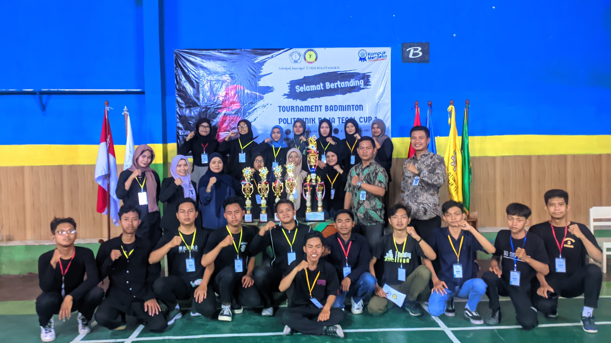

Bulu Tangkis
Unit Kegiatan Mahasiswa (UKM) Bulu Tangkis Politeknik Baja Tegal adalah salah satu ORMAWA (Organisasi Mahasiswa) yang bergelut pada bidang olahraga bulu tangkis, yang dimana Unit Kegiatan Mahasiswa (UKM) Bulu Tangkis ini bertujuan untuk meningkatkan soft skill para mahasiswa khususnya Mahasiswa Politeknik Baja Tegal agar lebih berkembang dan expert dalam bidang bulu tangkis, sehingga para mahasiswa bisa bersaing baik tingkat nasional maupun internasional.
Di dalam Unit Kegiatan Mahasiswa (UKM) Bulu Tangkis Politeknik Baja Tegal terdapat PST (Proposal Satu Tahun), yang dimana di dalamnya berisi kegiatan – kegiatan yang salah satunya adalah Perlombaan Bulu Tangkis setiap 1 tahun sekali yang bertujuan untuk memajukan dan membranding baik Unit Kegiatan Mahasiswa (UKM) Bulu Tangkis & Politeknik Baja Tegal di masyarakat luas.
Visi
Menjadi wadah pengembangan kemampuan olahraga badminton yang unggul dan berprestasi, serta berkontribusi dalam membentuk mahasiswa yang sehat, sportif, dan berjiwa kompetitif.